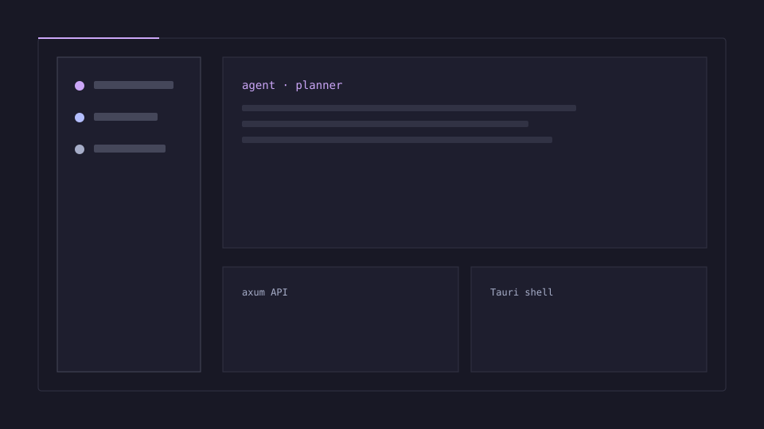
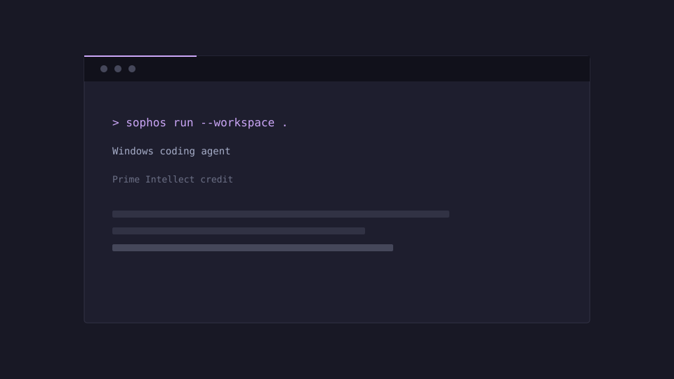

dotz — multi-agent coding dashboard
A local-first control surface for coordinating coding agents. The public repository and case study are the proof.

Portfolio · public work
I build applied AI and systems projects through independent, AI-assisted work. Seeking remote-only software engineering or applied AI roles.
Remote-only roles: caylebalvarezjames@gmail.com
Industry AI Suite · interactive proof
The lab replays ten dated journeys with their source, result, uncertainty, and human handoff. Five include a separately witnessed, source-cited local model sample. The repository also provides a local workbench for fresh public-source reviews and permitted, de-identified input.
A local-first control surface for coordinating coding agents. The public repository and case study are the proof.

A Windows-native coding agent built under Prime Intellect credit. The credit is named where the work is described.

Ten bounded review paths; ten dated journeys; five independently witnessed, source-cited local model samples.
No customer, revenue, adoption, or company-deployment outcome is claimed.
The local workbench runs public-source reviews and accepts permitted, de-identified input. The hosted lab replays ten dated results; organization use still needs authorized records, responsible owners, and human approval.
Browse ten dated journeys ↗ Read the suite overview
Reconcile cash rows and route exceptions for review
10 Treasury rows · local ledger and bank import · cited model sample
Build a dated, cited macro brief
15 World Bank observations · local research import · cited model sample
Review supplied EVM observations without wallet access
Local watch-only alerts · labelled hosted example · no live chain feed
Check chronology and experiment records for leakage
GDP chronology check · local experiment review · cited model sample
Prepare a cited public-text draft for human editing
Official OPM sample · local case and policy review · no send action
Package a cited answer with a human next step
Official OPM text · local knowledge and role import
Check public repository facts before a human handoff
GitHub metadata · local consent-gated account review · no outreach
Review official rule text with a clear HR handoff
Cited OPM text · local policy import · cited model sample
Turn public threat context into a review queue
CISA KEV records · local alert and asset import · cited model sample
Inspect page structure and draft editor priorities
Dated Pages read · local HTML audit · no ranking claim
Recorded evidence · retrieved 23–25 September 2026 (see each item’s UTC time below)
These are historical public-source examples, not live widgets. Expand a record only when you need its date, exact response hash, source links, and limits. The ten hosted workflow receipts remain available in the recorded lab.
01 · Treasury DTS
Dated Treasury data · company ledger not included
2026-09-21:II:1–2026-09-21:II:10. Source as-of 2026-09-21 (day); retrieved 2026-09-23 16:21:57 UTC. Federal cash is not company books. Response SHA-256 bde7791b9c12c297dd1c05af620f3618951e5c02b8d20e66a087bb0768f059af.02 · World Bank GDP
Dated World Bank data · no company research or backtest
USA:NY.GDP.MKTP.CD:2011–USA:NY.GDP.MKTP.CD:2025. MarketBrief calculated a 5.02% nominal 2024–2025 change; BacktestGuard checked a chronology split only. Retrieved 2026-09-23 18:51:34 UTC; as-of is annual by observation. Response SHA-256 2e54d1e502eae38a14474323ff0a3353c2f5d711c00009c41f4d752f99fedce3.03 · CISA KEV
Dated CISA catalog · no organization alert
CVE-2026-93952, dateAdded as-of 2026-09-22 (day). Retrieved 2026-09-24 09:29:57 UTC. Response SHA-256 e4988831e6d3c9036dc4279cdb7f5e369dadf1b245c7136aa719fca169b894fd.04 · GovInfo OPM proposed-rule text
Dated GovInfo text · no employer or customer records
2026-19222, “Employment in the Excepted Service,” published 2026-09-18 (day precision). The DATES section says comments must be received on or before 2026-11-17. Recorded app reads were retrieved 2026-09-24 16:03:29 UTC; each page lists its response hash.05 · GitHub repository metadata
Dated GitHub metadata · no CRM or consent record
pytest-dev/pytest, stable ID 37489525. Source updated_at as-of 2026-09-23 11:49:07 UTC; retrieved 2026-09-23 16:21:57 UTC. Response SHA-256 74856a0f15dbd5f68b123de0b98ecd3bf82012c73378afe9e8e37cc064f30cae.06 · SearchLift Pages read (pre-edit)
Dated Pages read · one-page structure only
SL-SRC-823863169a; response SHA-256 b4ed4de9f785a5059acde72c7660d6c20351d8409915c6323a252836b3001c88.SL-SRC-ade9f48af1, response SHA-256 d2351ebc6ced387c9e2c85894ec7b8947174d2fe613a582e5a05e049138e8f5. It is historical only; the old page URL remains unlinked.The one-page résumé includes independent project work, additional work history, education, and links to scoped public evidence.
Email me about software engineering or applied AI work.